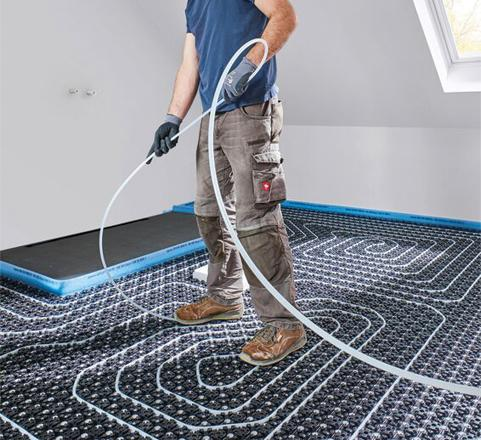
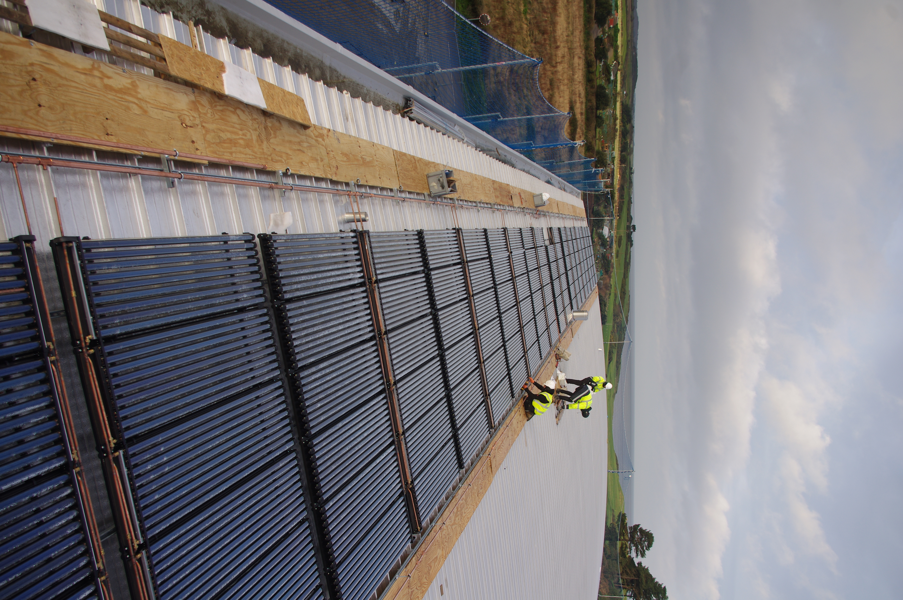
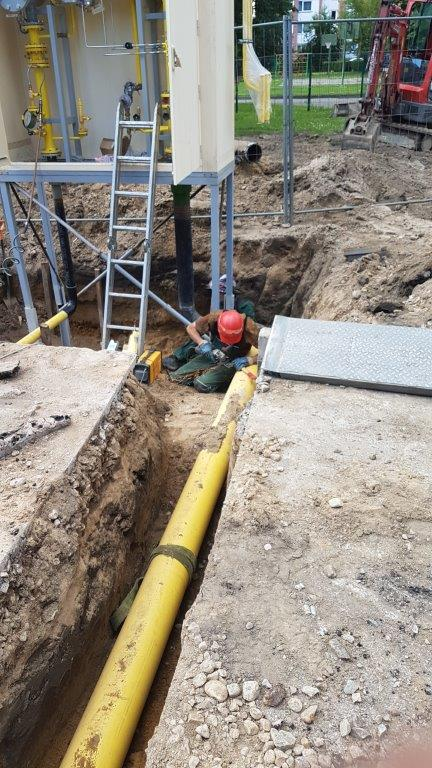
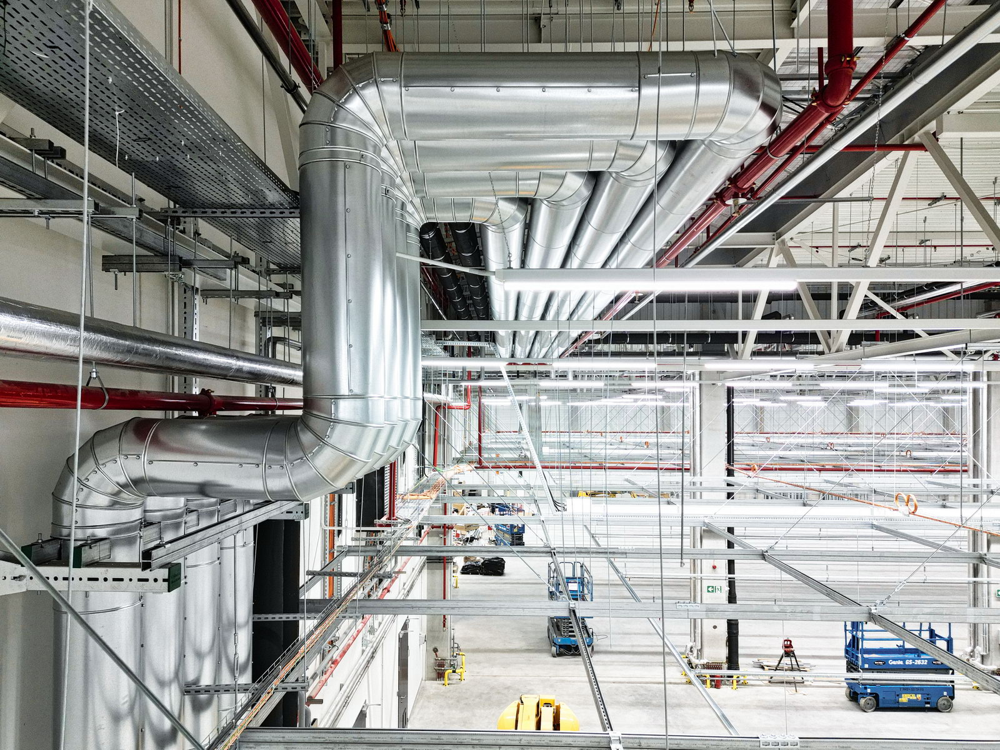
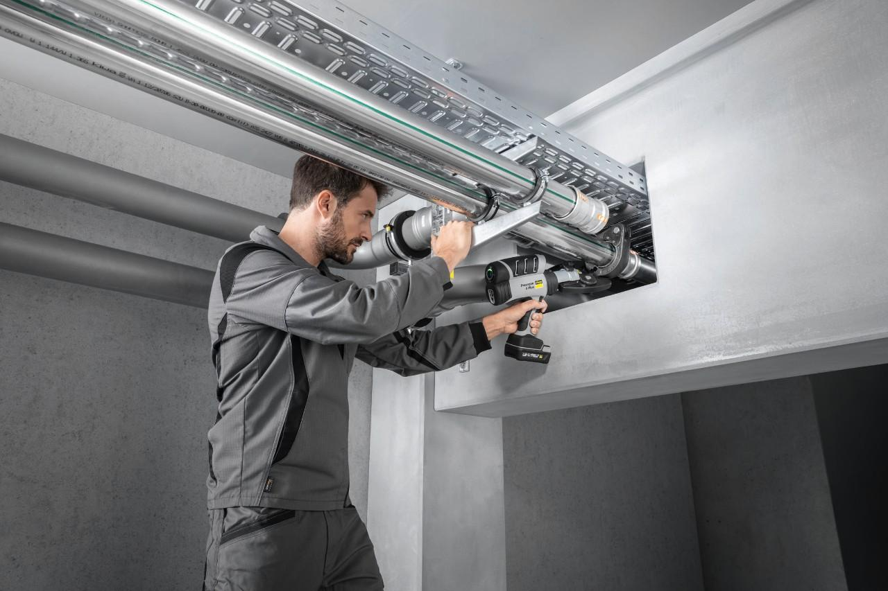
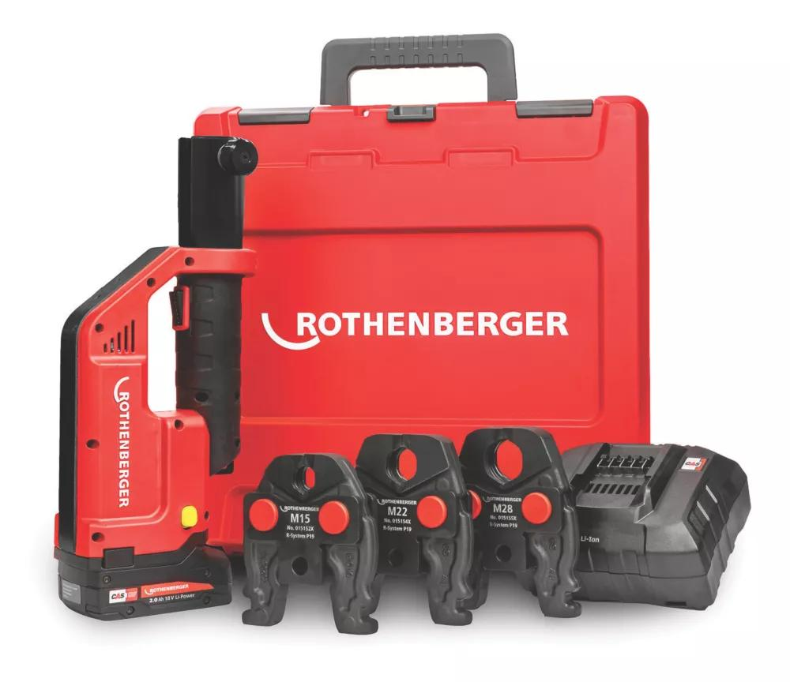

PROFESIONALNA OPREMA
03Renomirana proizvođača.
U našoj ponudi nalaze se profesionalni alati, armature i tehnička izolacija proizvođača ROTHENBERGER, OVENTROP i ARMACELL.
Pogledajte opremu ↗
TERMOTEHNIČKE INSTALACIJE I OPREMA
Izvođenje termotehničkih instalacija i distribucija profesionalne opreme i materijala.
01 / ZNANJE I ISKUSTVO
PROFESIONALNA OPREMA
03U našoj ponudi nalaze se profesionalni alati, armature i tehnička izolacija proizvođača ROTHENBERGER, OVENTROP i ARMACELL.
Pogledajte opremu ↗
Bavimo se izvođenjem termotehničkih instalacija, kao i prodajom profesionalnih alata, mašina i materijala za njihovu izradu i montažu.
Pogledajte našu ponudu ↗NAŠE USLUGE
TERMOTEHNIČKE INSTALACIJE / 01
Izvođenje instalacija grejanja za različite vrste objekata.

TERMOTEHNIČKE INSTALACIJE / 02
Ugradnja solarnih sistema u okviru termotehničkih rešenja.

TERMOTEHNIČKE INSTALACIJE / 03
Izvođenje gasnih instalacija u skladu sa zahtevima projekta.

TERMOTEHNIČKE INSTALACIJE / 04
Instalacije sistema klimatizacije i ventilacije.

TERMOTEHNIČKE INSTALACIJE / 05
Izvođenje vodovodnih instalacija za različite namene.
PROIZVODI I OPREMA
Alati, armature i tehnička izolacija renomiranih proizvođača, uz prateće materijale za izradu i montažu instalacija.

Oprema za profesionalnu izradu i montažu instalacija.
Komponente za termotehničke sisteme.
OVENTROPCevna, pločasta i trakasta tehnička izolacija.
ARMACELLSve počinje potrebama vašeg sistema.
Pošaljite nam upit za konkretan proizvod.
ZAŠTO REKORD ERDEŠ
1983.Rekord Erdeš DOO je preduzeće iz Novog Sada, osnovano 1983. godine pod imenom Solarterm. Od 1990. posluje pod sadašnjim nazivom, a njegova delatnost obuhvata izvođenje instalacija grejanja, solarnih i gasnih sistema, klimatizacije, ventilacije i vodovoda. Pored izvođenja radova, kompanija se bavi prodajom profesionalnih alata, opreme i materijala, uključujući proizvode proizvođača ROTHENBERGER, OVENTROP i ARMACELL.
04 / NAŠA PRIČA
Više od četiri decenije poslovanja u Novom Sadu, od izvođenja termotehničkih instalacija do prodaje profesionalnih alata, opreme i materijala.
Početak poslovanja u oblasti termotehničkih instalacija.
Kompanija nastavlja poslovanje pod današnjim nazivom.
Izvođenje termotehničkih instalacija i distribucija alata, opreme i materijala.
06 / KORISNE INFORMACIJE
Za konkretan sistem ili proizvod,
obratite nam se direktno ↗
Bavimo se termotehničkim instalacijama: grejanjem, solarnim i gasnim sistemima, klimatizacijom, ventilacijom i vodovodnim instalacijama.
U ponudi su profesionalni alati i mašine ROTHENBERGER, ventili i armature OVENTROP i tehnička izolacija ARMACELL, uz druge instalacione materijale i opremu.
Pošaljite upit sa nazivom ili oznakom proizvoda i potrebnom količinom. Dostupnost i rok isporuke potrebno je potvrditi za konkretan upit.
Kao početne informacije možete navesti vrstu instalacije, lokaciju objekta i kratak opis potreba. Ukoliko imate tehničku dokumentaciju, možete je priložiti uz upit.
KONTAKT
Bilo da planirate termotehničke instalacije ili tražite profesionalnu opremu, kontaktirajte nas za više informacija.
Kontaktirajte nas ↗